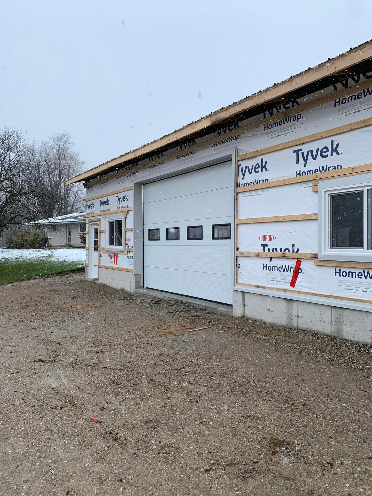
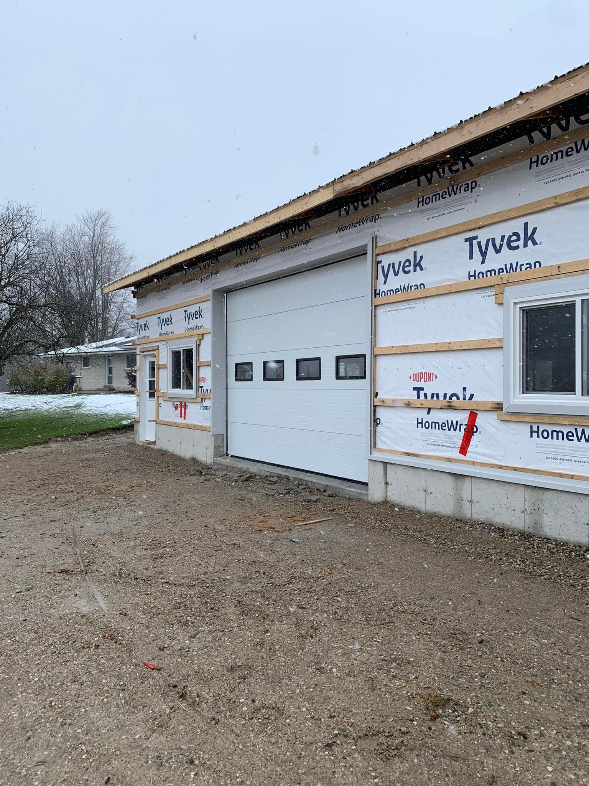

Your garage door is more than just an entryway—it's a statement piece that enhances your home's curb appeal and reflects your unique style. That's why we offer an extensive selection of materials, from classic wood to modern steel, and a variety of stylish designs to perfectly complement your home. Whether you're seeking timeless elegance, contemporary charm, or lasting durability, our garage doors are crafted to meet your needs and elevate your space with both beauty and functionality.
Experience the perfect blend of durability and style with Classic Steel Garage Doors. Offering exceptional strength, low maintenance, and long-lasting performance, they provide enhanced security while adding a timeless, sleek look to your home.
| Material | U-factor | R-value |
|---|---|---|
| Steel | ~0.5-0.8 | ~12-18 |
Looking for more information on which materials will benefit you the most? Get in touch with us today!
Upgrade your home with Composite Wooden Garage Doors—combining the natural beauty of wood with the strength and weather resistance of composite materials for a stylish, durable, and low-maintenance solution.
| Material | U-factor | R-value |
|---|---|---|
| Wood | ~0.3-0.5 | ~12-18 |
Looking for more information on which materials will benefit you the most? Get in touch with us today!
Transform your home with Custom Glass and Aluminum/Wooden Garage Doors—offering a sleek, modern look with unparalleled durability and natural light, tailored to your unique style and needs.
| Material | U-factor | R-value |
|---|---|---|
| Mix | ~0.8-1.2 | ~6 |
Looking for more information on which materials will benefit you the most? Get in touch with us today!
 

Boost your home's curb appeal with Custom Aluminum Garage Doors—lightweight, durable, and resistant to the elements, offering a sleek, modern look with minimal upkeep.
| Material | U-factor | R-value |
|---|---|---|
| Aluminum | ~0.3-0.5 | ~12-18 |
Looking for more information on which materials will benefit you the most? Get in touch with us today!

Enhance your home's exterior with Custom Vinyl Garage Doors—durable, low-maintenance, and weather-resistant, offering a stylish and long-lasting solution for any home.
| Material | U-factor | R-value |
|---|---|---|
| Vinyl | ~0.3-0.5 | ~12-18 |
Looking for more information on which materials will benefit you the most? Get in touch with us today!
is a measurement of how well a garage door insulates and resists heat transfer. It represents the amount of heat that can pass through the door over time. A lower U-factor means the garage door provides better insulation and is more energy-efficient, helping to keep your garage warmer in the winter and cooler in the summer. This factor is especially important if your garage is attached to your home or if you spend time working in your garage, as it can impact your energy costs and indoor comfort. Garage doors with materials like insulated steel, polyurethane, or polystyrene panels typically have lower U-factors
measures the thermal resistance of a garage door, indicating how well it can resist heat flow and provide insulation. A higher R-value means better insulation, which helps keep your garage more comfortable by maintaining consistent temperatures and reducing energy costs. When it comes to garage doors, the R-value is often determined by the type and thickness of the insulation material used, such as polystyrene or polyurethane. Polyurethane-insulated doors typically have higher R-values because the foam is denser and fills the door more completely.
This is a are a popular choice for their durability, versatility, and timeless appearance. They are made from high-quality steel and often come with options for insulation, enhancing energy efficiency and soundproofing. These doors are available in a variety of designs, including traditional raised panels or more contemporary styles, and can be customized with different colors, finishes, and window options to suit your home's aesthetic.
This material combines the natural beauty of wood with the durability and low maintenance of modern materials. They are made from a mix of wood fibers and synthetic materials, offering the appearance of real wood without the drawbacks like warping, rotting, or cracking. These doors are designed to mimic the classic, elegant look of wooden garage doors while being more resistant to weather and wear.
A modern, stylish, and versatile options that add a sleek, contemporary look to your home. These doors often feature a combination of glass panels with aluminum or wooden frames, allowing for natural light while maintaining privacy and durability. They are highly customizable, making them ideal for creating a unique and personalized aesthetic.
This is a durable, lightweight, and highly versatile, offering the appearance of real wood without the maintenance challenges. Fiberglass is resistant to dents, rust, and cracking, making it an excellent option for homeowners seeking a low-maintenance yet stylish garage door. These doors can be customized to suit various architectural styles, from traditional to modern.
This material is lightweight, modern, and durable, offering a sleek and contemporary design that complements a variety of architectural styles. These doors are often paired with glass panels for a clean, minimalist aesthetic, but they can also be customized with solid panels or unique finishes. Aluminum's corrosion-resistant properties make these doors ideal for coastal or humid environments.
This material is durable, low-maintenance, and weather-resistant, making them an excellent choice for homeowners seeking long-lasting performance and style. Vinyl is resistant to dents, cracks, and rust, making it ideal for high-traffic households or harsh weather conditions. These doors are often designed with a clean, smooth finish and can mimic the look of wood or other materials.